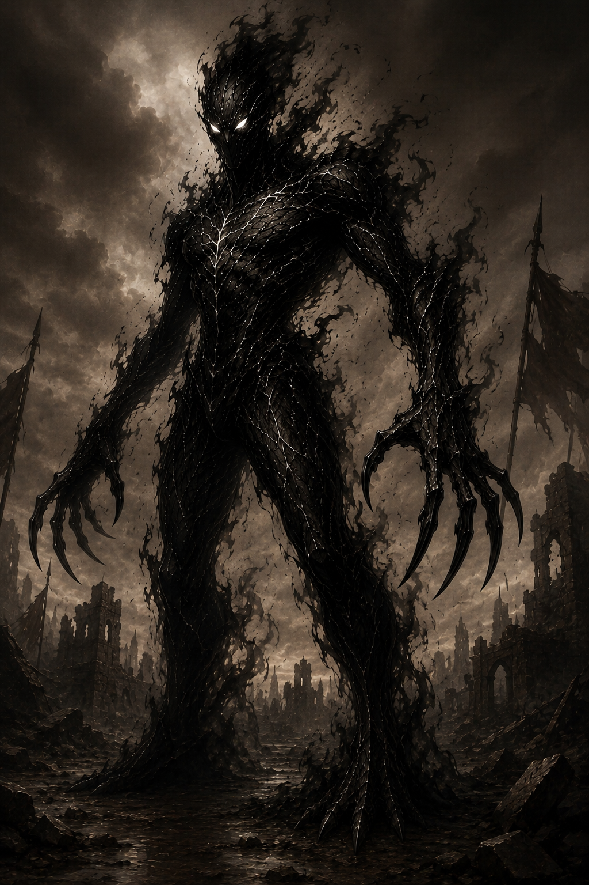

Санн
Глава форлов

АРХИВНОЕ ДОСЬЕ № 02-D
Допуск: высший
[КОД: ОПОРА]
Форл
Объект: Санн
Степень наблюдения: высокая
Расширенная оценка:
Санн является одним из первых докаинов, появившихся в человеческом мире, и одним из старейших соратников Дариуса. Ещё до начала полноценной войны объект был замечен будущим королём благодаря своей исполнительности, спокойствию и готовности выполнять поручения без лишних споров.
Несмотря на склонность к простым выводам и странным шуткам, Санн является опытным воином. В бою способен сохранять порядок, выполнять приказы в критической обстановке и прикрывать отступление союзников.
Санн входил в число немногих докаинов, которым Дариус доверял свои исследования. Вместе с Эрлом и Фореллом он участвовал в изучении желтоглазых культистов и первых экспериментах, впоследствии приведших к появлению форлов.
В дальнейшем объект отвечал не только за форлов, но и за размещение войск, получение докладов от подчинённых и подготовку обороны перед возможными нападениями людей.
Угроза:
Санн представляет угрозу высокого уровня. Объект обладает значительным боевым опытом и способен самостоятельно уничтожать обычных солдат, культистов и магов.
Главная опасность заключается в его способности командовать форлами. Подчинённые Санна могут увеличивать численность войска непосредственно во время сражения, создавая новых докаинов и быстро меняя соотношение сил на поле боя.
Абсолютная преданность Дариусу делает переговоры с Санном практически бесполезными. В случае угрозы королю или его ближайшим соратникам объект немедленно вступает в бой, не оценивая опасность для собственной жизни.
Особенности:
- Один из первых докаинов, появившихся в человеческом мире.
- Первый помощник Дариуса после его назначения главнокомандующим.
- Один из ближайших друзей и наиболее доверенных соратников Дариуса.
- Одним из первых обнаружил опасность белого металла.
- Был посвящён в тайные эксперименты Дариуса.
- Участвовал в планировании размещения войск и обороны крепости.
- Ставит безопасность союзников выше собственной.
Примечание наблюдателя:
Короли редко замечают тех, кто постоянно находится рядом.
Советников запоминают по словам.
Генералов — по победам.
А Санна запомнили потому, что в самый тяжёлый момент Дариус всегда знал:
стоит ему обернуться — и друг будет рядом.
Зафиксированные способности:
- Трансформация конечностей.
- Создание клинков из собственного тела.
- Облачная форма.
- Полёт в форме тёмного облака.
- Перемещение через тени.
- Повышенная физическая сила.
- Высокая скорость.
- Повышенная реакция.
- Ускоренная регенерация.
- Управление тёмной энергией.
- Опыт разведки на вражеской территории.
Последняя запись:
Если ты дочитал это досье до конца, значит хотел узнать, кем был этот докаин.
Но архивы умеют хранить лишь факты.
Истинную историю всегда приходится искать между строк.